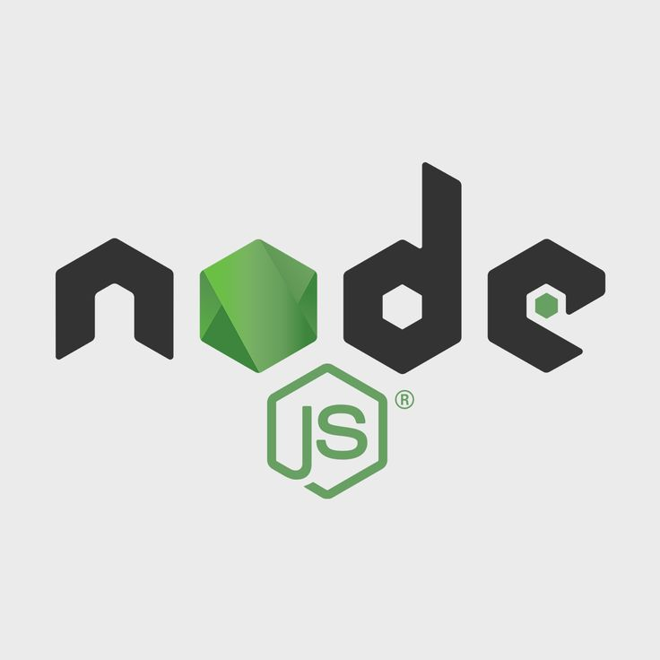
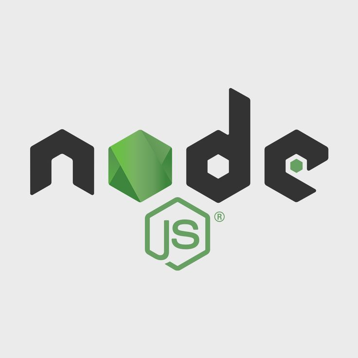

My journey into software development started with a Higher Certificate in IT Support Services, building a strong foundation in troubleshooting and client interaction. I later earned a Bachelor of Computer & Information Science in Application Development from Varsity College Waterfall, specializing in full-stack web and mobile development.
I’m deeply passionate about solving problems through code, continuously learning new technologies, and staying ahead in areas like AI/ML, cyber security, IoT, and cloud solutions. Whether it's building intuitive user experiences or architecting backend systems, I enjoy working across the stack to bring innovative ideas to life.